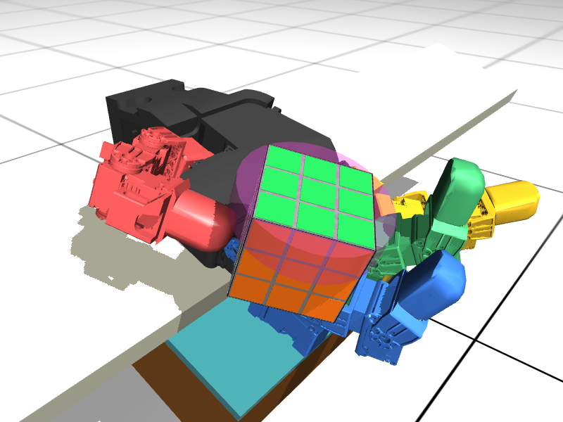
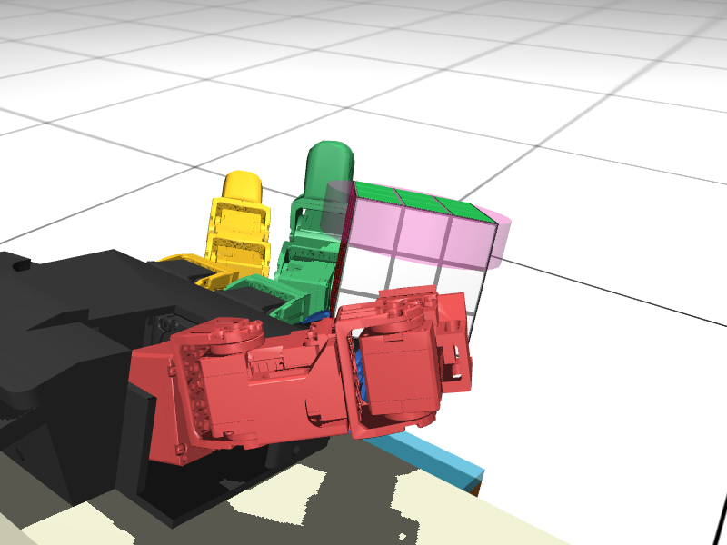
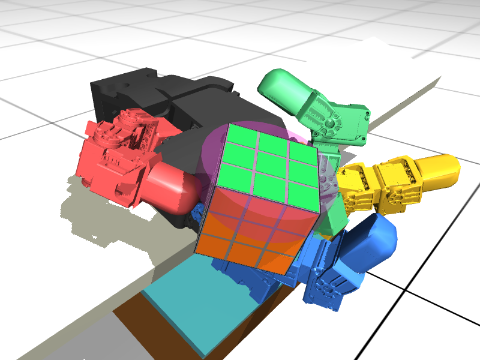
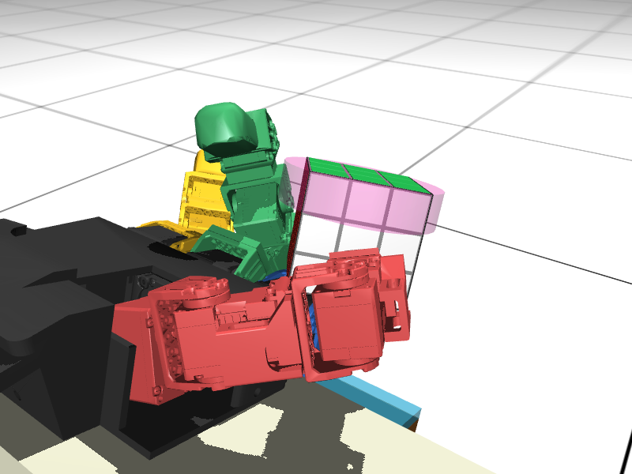
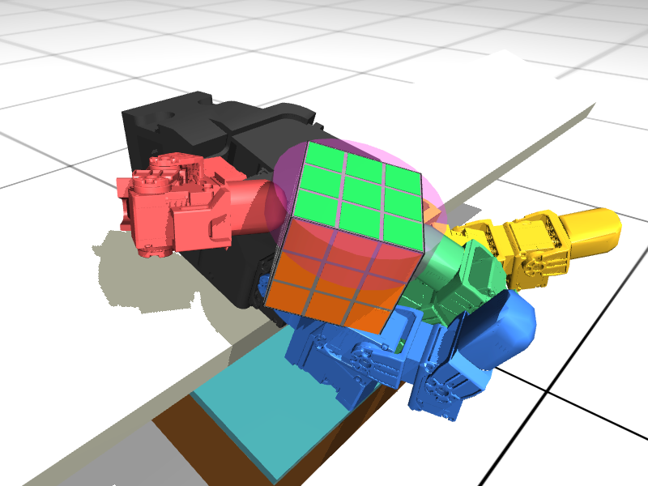
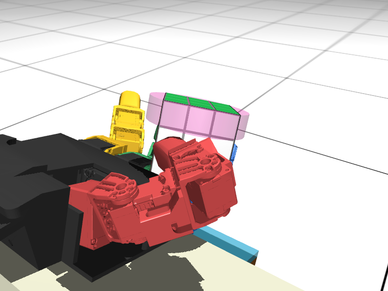
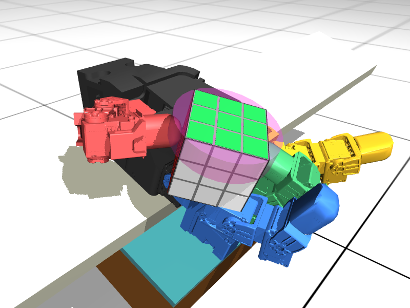
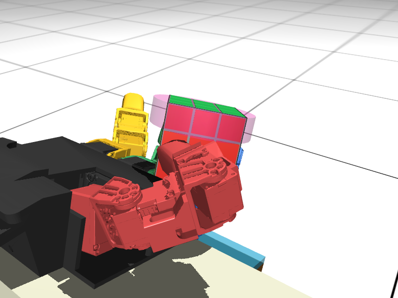

2026-11-11 최신: 약지 앞면 받침·엄지 보정·중간 동작 연결 검토
새 파지를 별도로 배치한 유지 검사와 실제 회전 뒤 도달 검사를 구분한다. 전체 회전→유지→다음90도→유지의 실물 준비는 아직 완료하지 않았다.
파랑 검지 · 초록 중지 · 노랑 약지 · 빨강 엄지. 분홍 원통은 윗단 회전 영역 표시이며 수치 인증을 대체하지 않는다.








맞은편 접촉이 있는 모델 파지에서는 엄지만 추가로 닫아 엄지 압박이 증가하면서 지지·윗단 공간 유지가 통과했다. 실제 첫 회전 끝 모델의 맞은편 접촉은 이와 달라 엄지 하중 형성은 미달이었다. 아래 힘은 모델 가정이며450mA 환산값이나 사진 자세의 측정값이 아니다. 엄지 하중 형성 미달을 전체 손 지지 실패로 부르지 않는다.
| 출발 | 추가 닫기 가정N | 최종 엄지 법선력N | 큐브 변화 | 엄지 하중·공간 유지 |
|---|---|---|---|---|
| 실제 첫 파지 도달 상태 | 0 | 0.0037 | 0.127mm / 0.279도 | 엄지 하중 형성 미달 |
| 실제 첫 파지 도달 상태 | 0.4 | 0.0049 | 0.329mm / 0.657도 | 엄지 하중 형성 미달 |
| 실제 첫 파지 도달 상태 | 0.8 | 0.0052 | 0.596mm / 1.129도 | 엄지 하중 형성 미달 |
| 별도 맞은편 접촉 파지 | 0 | 1.4531 | 0.075mm / 0.229도 | 통과 |
| 별도 맞은편 접촉 파지 | 0.4 | 1.6490 | 0.183mm / 0.277도 | 통과 |
| 별도 맞은편 접촉 파지 | 0.8 | 1.8080 | 0.349mm / 0.534도 | 통과 |
3015목표를 상태 초기화 없이 재생했고 네 구간의 전체 상태가 저장 결과와 일치했다. 90도 자세 오차 0.874도, 마지막4.05초 지지100%, 윗단 인증 하한 7.686mm다. 기존 canonical 위치와 5.604mm 다르다. 실제 도달한 이 위치에서 다음90도와 복귀를 별도로 검사한다.
이 첫 파지의 연속 재생과 아래 맞은편 파지의 별도 배치를 구분한다.
초기 배치부터의 실제 모델 재생큰 회전 뒤의 모델 큐브는 검지 뿌리·마디 위에 남아 있었다. 기존 관절 자세를 복사하면 큐브 위치가 달라 엄지·중지 접촉력이 남지 않았다. 현재 위치에서 맞은편 접촉점까지 탐색한 두 조건과, 위치도 함께 바꾼 두 조건을 구분했다.
새 후보는 원래 상태에서 19.846mm 떨어진 가정 위치다. 기존 공통 위치의2mm 기준과 실패 기록은 그대로다. 새 위치로의 도달과 두 회전 사이의 공통 위치 사용을 모두 검증해야 한다.
기하 탐색 근거큐브를 그 위치에 배치한 뒤 자유 동역학으로 유지했다. 첫 회전이나 다음 회전으로 도달한 결과가 아니다. 중력 보상과 접촉 예압은 모델 지령이며450mA의 환산값이 아니다.
| 예압 가정 | 배치 유지 | 유지1ms 표본 | 중지/엄지0.1N 초과 | 윗단 인증 하한mm | 처음 배치에서 변화 |
|---|---|---|---|---|---|
| 0.8N 가정 | 통과 | 4050 | 100% / 100% | 2.1412404859737393 | 0.388mm / 0.709도 |
| 1.6N 가정 | 통과 | 4050 | 100% / 100% | 2.4806705578017443 | 0.436mm / 1.288도 |
| 2.4N 가정 | 미달 | 4050 | 100% / 100% | 3.3240173346739326 | 0.793mm / 3.414도 |
| 3.2N 가정 | 미달 | 4050 | 100% / 100% | 3.897031616429402 | 0.848mm / 3.664도 |
큐브를 그 위치에 배치한 뒤 자유 동역학으로 유지했다. 첫 회전이나 다음 회전으로 도달한 결과가 아니다. 중력 보상과 접촉 예압은 모델 지령이며450mA의 환산값이 아니다.
| 예압 가정 | 배치 유지 | 유지1ms 표본 | 중지/엄지0.1N 초과 | 윗단 인증 하한mm | 처음 배치에서 변화 |
|---|---|---|---|---|---|
| 0.8N 가정 | 통과 | 4050 | 100% / 100% | 2.223329487124147 | 0.354mm / 0.525도 |
| 1.6N 가정 | 통과 | 4050 | 100% / 100% | 2.556489650858758 | 0.377mm / 0.963도 |
| 2.4N 가정 | 통과 | 4050 | 100% / 100% | 3.26783757566826 | 0.778mm / 2.887도 |
| 3.2N 가정 | 미달 | 4050 | 100% / 100% | 3.866108411946346 | 0.924mm / 3.379도 |
새 파지에 배치해 유지한 끝 상태에서 각 조건을 따로 시작했다. 실제 왼손 하중, 실물 허용치, 도달 경로의 강건성을 측정한 결과가 아니다. 위치 기준은 명시한 새 파지이며 기존 공통 위치 판정을 바꾸지 않는다.
| 마찰 가정 | 일정 외부 모멘트N·m | 4.05초 | 방향 변화 | 위치 변화 |
|---|---|---|---|---|
| 0.3 | +0 | 통과 | 0.139도 | 0.046mm |
| 0.25 | +0 | 통과 | 0.141도 | 0.047mm |
| 0.35 | +0 | 통과 | 0.138도 | 0.045mm |
| 0.3 | -0.0005 | 통과 | 0.078도 | 0.028mm |
| 0.3 | +0.0005 | 통과 | 0.211도 | 0.069mm |
| 0.3 | -0.001 | 통과 | 0.021도 | 0.012mm |
| 0.3 | +0.001 | 통과 | 0.284도 | 0.092mm |
| 0.3 | -0.003 | 통과 | 0.209도 | 0.052mm |
| 0.3 | +0.003 | 통과 | 0.827도 | 0.248mm |
| 0.3 | -0.01 | 통과 | 1.688도 | 0.457mm |
| 0.3 | +0.01 | 미달 | 3.589도 | 1.072mm |
이 검사는3015목표로 도달한 상태에서 시작했다. 위 맞은편 파지를 별도로 배치한 검사와 출발 상태가 다르다. 실제 왼손 하중은 여전히 측정하지 않았다.
| 마찰 | 외부 모멘트N·m | 유지 | 방향 변화 |
|---|---|---|---|
| 0.3 | +0 | 통과 | 0.009도 |
| 0.25 | +0 | 통과 | 0.009도 |
| 0.35 | +0 | 통과 | 0.009도 |
| 0.3 | -0.0005 | 통과 | 0.177도 |
| 0.3 | +0.0005 | 통과 | 0.158도 |
| 0.3 | -0.001 | 통과 | 0.345도 |
| 0.3 | +0.001 | 통과 | 0.325도 |
| 0.3 | -0.003 | 통과 | 1.888도 |
| 0.3 | +0.003 | 통과 | 1.579도 |
| 0.3 | -0.01 | 미달 | 125.852도 |
| 0.3 | +0.01 | 미달 | 30.536도 |
약지 손끝·끝마디·중간마디의 유한 탐색3개에서 하부 접촉과 윗단 여유를 함께 통과한 후보는0개였다. 기록한 실물 약지 각도는 원래 범위 안으로 잘라 탐색 시작점으로만 썼다. 제한을 넓히거나 이 유한 탐색으로 실물 약지가 닿을 수 없다고 결론내리지 않는다.
약지 추가 접촉 탐색회전 뒤 실제 모델 상태에서 시작해 큐브를 옮기지 않고 관절 목표를 재생했다. 네 경로는 큐브가 새 파지 위치로 이동하지 않아 미달했다. 이 때문에 배치 유지 통과만으로 실물 경로를 내보내지 않는다.
| 관절 이동 순서 | 2틱/75ms 목표 | 새 위치와 차이 | 90도 자세 오차 | 새 작업 파지 도달 |
|---|---|---|---|---|
| together | 405 | 19.850mm | 0.928도 | 미달 |
| MF_then_TH | 548 | 19.769mm | 1.002도 | 미달 |
| TH_then_MF | 548 | 19.769mm | 1.002도 | 미달 |
| MF_abduct_then_shape | 691 | 19.757mm | 1.023도 | 미달 |
완료한 분량에서 미달. 실행 600목표, 최종 방향 오차 4.300도, 새 위치와의 차이 15.557mm. 미래 예측 복사본과 실제로 실행한 모델 상태를 구분하고 실제 구간에서는 큐브 상태를 초기화하지 않는다.
피드백 기록완료한 분량에서 미달. 실행 360목표, 최종 방향 오차 11.645도, 새 위치와의 차이 17.114mm. 미래 예측 복사본과 실제로 실행한 모델 상태를 구분하고 실제 구간에서는 큐브 상태를 초기화하지 않는다.
피드백 기록완료한 분량에서 미달. 실행 360목표, 최종 방향 오차 4.343도, 새 위치와의 차이 15.517mm. 미래 예측 복사본과 실제로 실행한 모델 상태를 구분하고 실제 구간에서는 큐브 상태를 초기화하지 않는다.
피드백 기록완료한 분량에서 미달. 실행 234목표, 최종 방향 오차 86.101도, 새 위치와의 차이 1.283mm. 미래 예측 복사본과 실제로 실행한 모델 상태를 구분하고 실제 구간에서는 큐브 상태를 초기화하지 않는다.
피드백 기록